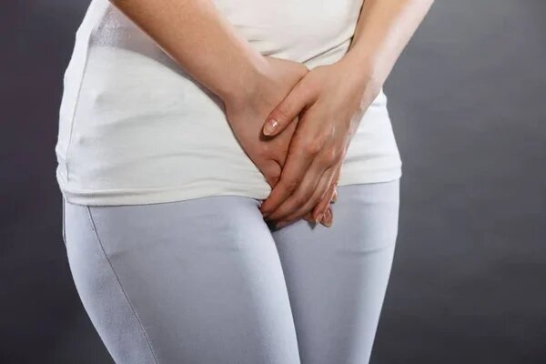

Болестта, която винаги идва в неподходящия момент – цистит. Как и с какво да я лекуваме?
Разпространението на цистита сред хората на възраст от 20 до 70 години е критично високо на фона излекуваните случаи, които са не по-повече от 20%. Защо болестта се лекува толкова трудно и как да се излекуваме напълно, ще ни разкаже докторът на медицинските науки, професор Калоян Шопов.

– Г-н Шопов, здравейте! Моля, разкажете ни какво представлява цистита и кой попада в рисковата му зона?
– Здравейте! Циститът е възпалително заболяване на лигавицата на пикочния мехур, широко разпространено при жените. При мъжете и при децата възпалението се среща много по-рядко и протича по-слабо. Придружен от ужасно неприятно усещане, водещо до загуба на работоспособност в периода на влошаването.
– Толкова ли е сериозно?
– Това е коварна болест. Девет от десет пациенти идват при мен, когато вече не могат да се справят сами. Като лекар им са карам, като човек – мога да ги разбера. Ситуацията е интимна, неприятна, иска ти да се отървеш от нея колкото се може по-скоро. В такива случаи мозъкът работи за оцеляване.
Когато човек има остра болка каква е първата му мисъл? Да намали болката. И тя може да се намали само с хапчета. Така че той бяга според инстинкта си в аптеката за антибиотици.
– Антибиотиците нямат ли ефект?
– Не, че е точно така. Те наистина премахват болката. Изглежда, че болестта е изчезнала напълно. Но тя никъде не е отишла. След един-два месеца ще има ново влошаване. А така и до хроничният не не далеч. Антибиотиците трябва да се избират въз основа на лабораторните изследвания.
Първо, трябва да се определи патогена, след това вече да се унищожава с тежката артилерия. Ако ги пиете хаотично, ефектът ще бъде еднократен, а след това напълно противоположен.
– Какви причини и симптоми на цистита бихте подчертали ?
– Болестта може да бъде причинена от различни причини от инфекциозен и не инфекциозен характер. Независимо от тях симптомите винаги са едни и същи:
- ппарене във влагалището, прорязвания и болки;
- често желание за уриниране
- малко количество отделена урина;
- мътна или ярко жълта на цвят урина, със и без кръв в нея;
- лошо здравословно състояние, леко повишаване на телесната температура, слабост.
Най-честите причини за цистита са:
- травма по време на секс;
- слаб имунитет;
- проникването на бактерии през уретрата в пикочния мехур;
- огнища на хронична инфекция в тялото;
- преболедувани гинекологични, венерически заболявани;
- хипотермия на тазовите органи;
- травматично въздействие;
- хормонални нарушения в организма;
- характеристики на анатомичната структура на пикочните пътища.
– Каква е се крие опасността от цистита и неправилното лечение?
– Независимо от начина, по който получавате цистит за първи път, по-нататъшното качество на живот зависи от защитните сили на организма. Ако вече сте се лекували с антибиотици (а това е най-честият и неефективен начин за в бъдеще), тогава организма Ви е в опасност.
С течение на времето бактериите развиват резистентност към антибиотиците, мутират и придобиват имунитет. Лечението на цистит става все по-трудно, болестта придобива хроничен характер. Това означава, че Вие си оставате болни, заразени, дори ако това не е придружено от тежките симптоми на цистита.
Към последствия от цистита можем да отнесем: уринарна инконтиненция(изпускането), пиелонефрита, бъбречните абсцеси, бъбречната недостатъчност и безплодието.

– И все пак може ли да се излекува цистита?
– Може. С антибиотици – само след пълно изследване и под пълния контрол на лекуващия лекар, на когото имате доверие. С билкови препарати е добре да се прави профилактика на пикочните и половите заболявания, да се премахне хроничнияцистит и, разбира се, да се предотврати острия.
– Можете ли да препоръчате някакви отделни лекарства?
– Мога с чиста съвест да препоръчам само . Лекарството е на растителна основа, с най-богатият състав на така наречените естествени антибиотици. Те, за разлика от синтетичните, не вредят на организма. По ефективност, те по никакъв начин не отстъпват от обикновените лекарства.

Може би, това е единственото лекарство, което може да се взема без лекарско предписание – както при първите симптоми на цистит, така и при изоставени случаи. Освен това, цената му е приемлива.
– Смятате ли, че болестта може да се лекува самостоятелно?
– Вижте, хората и вече са се опитвали да се излекуват сами. Слава богу, че сега има , който не вреди на тялото, както всякакви там лекарства от аптеката. В тях има такава доза антибиотик, че те могат кон да убия.
А в няма. Той е на растителна основа. Ефектът е същият, както при лекарското лечение, но страничните ефекти са нулеви. Следователно, да, разбира се, допускам и дори настоявам хората да се лекуват вкъщи, но за Бога, лекувайте се с безопасни лекарства.
Колко навреме намерих статията Ви. Много Ви благодаря! Поръчах си , чакам го с нетърпение.
Имах слаба форма на цистит. Нямах болка и прерязвания, но след уриниране непрекъснато имах неприятно усещане. Лекарят ми препоръча . Страхотно лекарство, много бързо ми помогна.
Сестра ми учи в медицинския, каза, че има много сериозни последици от цистита.
Най-лошото е, че циститът бързо минава в хронична форма. Знам го по себе си. Ще опитам . Благодаря за статията!
Не мога да си представя как можеш да отидеш на лекар, когато едва пълзиш от банята до тоалетната, когато той се влошава. стана моето спасение!!!
Уви, аз също не можах дълго време да стигна до лекаря. Записът беше за следващата седмица, щях да умра от болка.
С циститът се сблъсках за първи път на 30 години. Започнах да усещам болка по време на уриниране, както и болка по време на секс. Веднага отидох на лекар. Той ми изписа . Лекарството ми помогна перфектно, бързо премахна всички симптоми. Препоръчвам го!
Колкото повече остарявам, толкова по-страшен става животът...
За здравето трябва да се следи от млади години, за да нямаш такива проблеми след това.
Циститът е моето проклятие! Страдах от него цели 7 години. Преди бременността ми беше просто кошмар, какво само не съм правила, и пикочният ми мехур промиваха, и на разгревки ходех, какво само не съм пила и инжектирала. По време на бременността ми всичко мина, а след това олучих рецидив. Ужасни болки, прорязвания, и всичко това с малкия син на ръцете. Научих за от една приятелка, това лекарство беше последната ми надежда. И надеждата ми не беше напразна. След известно време на употреба симптомите станаха по-слаби и след това напълно изчезнаха. е едно чудесно лекарство!